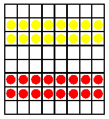

|
 |
Kétszemélyes játék
A dámajáték világszerte ismert változatai közül az egyik
legérdekesebb és legegzotikusabb a török dámajáték.
Ehhez olyan táblát használnak, amely 64 azonos színû mezõbõl áll
(nem hagyományos fekete-fehér beosztású). A bábuk menetmódja is más,
mint a többi dámajáték-változatban, ami lényegesen megváltoztatja a
lejátszás módját és taktikáját.Forrás: Zdzislaaw
Nowak: A malomtól a góig.
|
- Mindkét játékosnak tizenhat bábuja van, amelyeket két-két
sorban kell felállítani, de úgy, hogy a tábla két legszélsõ sora
üresen maradjon. A játék célja egyébként ugyanaz, mint a többi
dámajátéké: az ellenfél bábuinak kiütése vagy beszorítása
- A török dámajátékban nem szabad átlósan lépni, csak elõre
vagy oldalirányban. Az ütésre a nemzetközi dámajáték szabályai
érvényesek, azzal a különbséggel, hogy ütni is csak vízszintesen
vagy függõlegesen szabad
- A tábla utolsó sorában a bábuk vezírré változnak.
(Ugyanolyan kiváltságai vannak, mint a nemzetközi dámajátékban a
dámának. A vezír egy lehetséges lépését az ábra mutatja.
- Az nyer, aki az ellenfél összes bábuját kiüti, illetve
mozgásképtelenné teszi, vagy akinek maradt még egy vezíre,
miközben az ellenfelének már csak egyetlen közönséges bábuja
van.
- Az úgynevezett nagy török dámajátékot ugyanilyen
szabályokkal játszhatjuk 100 mezõs táblán, 30–30 bábuval.
|
 |
 |
|
{kind=link}